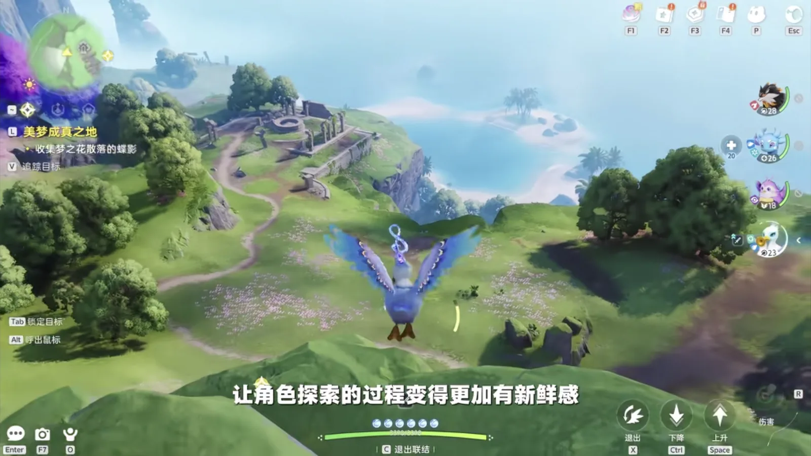
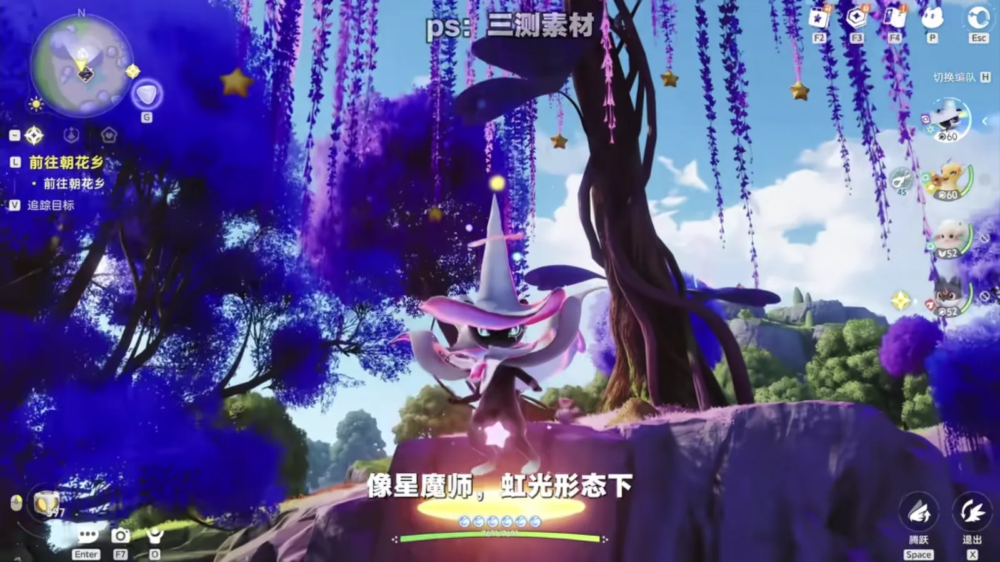
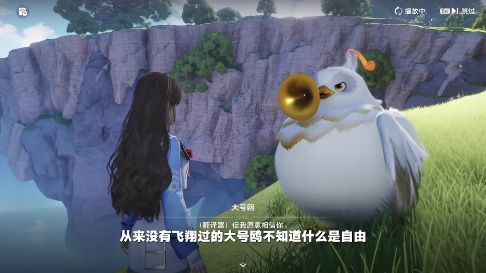

Home首页 / Guides攻略 / Aniimo Review: What Twine Changes About Creature Collectors《伊莫》新游戏测评：联结系统到底改了捉宠游戏的什么
Checked核对于 October 8, 20262026 年 10 月 8 日
Aniimo Review: What Twine Changes About Creature Collectors《伊莫》新游戏测评：联结系统到底改了捉宠游戏的什么
A review of the one system Aniimo is built on — what Twining into a captured creature changes about exploring, fighting, forms and story, and what the game still has to prove.从一个系统看整款游戏：和伊莫联结这件事，到底改变了探索、战斗、形态和剧情里的什么，以及它还有什么没证明。
Aniimo went from first reveal to release in a little over a year — PC and consoles on 16 September 2026, mobile a week later. It arrived with 30 million pre-registrations and more than a million Steam wishlists, which is fast by any measure for a new name in this genre, and the attention brought a line it has been living down ever since: isn't this just Palworld plus Genshin? A few rounds of testing later, it is standing on its own idea instead.《伊莫》从首度公布到 2026 年 9 月 16 日在 PC 与主机端上线，只隔了一年多 —— 手机端晚一周，9 月 23 日。预约量做到 3000 万，Steam 心愿单也过了百万，这个速度放在任何一个品类的新游身上都算利索。热度带来的不全是好话，最扎眼的一句是「这不就是幻兽帕鲁加原神吗」。但几轮测试走下来，这款游戏确实靠自己的一套新思路站稳了脚。
The one thing worth saying about it is a single system. Twine is the whole review: merge with an Aniimo you have already caught, and for the next stretch of the game you are that Aniimo.它最值得说的东西只有一个，就是 Twine（联结） 这一个系统。和你已经捕捉到的伊莫联结，接下来那一段路，你就是那只伊莫。
1. Twine: every creature you catch is a tool on the road一、联结系统：抓到的每一只，都是路上的工具
Start with the mechanic itself. Your character can merge with any Aniimo you have already caught, and once merged you are that Aniimo — you solve its puzzles, cross its terrain and fight its fights in its body.先把系统本身说清楚。玩家扮演的角色可以和已经捕捉到的伊莫联结，联结之后你就是那只伊莫，用它的身体去解谜、探索、战斗。
Why that matters only shows up next to the traditional creature collector. There, catching and exploring are two unrelated activities. You go out into the world because you want more creatures, but the catching itself gives the exploring nothing except a reason: what is in your box has no bearing on whether you can climb the mountain in front of you or dive into the water below it. The creatures are a collection. They are not tools.这件事为什么重要，得放到传统捉宠游戏里看。在传统的捉宠游戏里，抓宠和探索是两件互不相干的事。你去探索世界，是因为想抓更多种类的宠物；可抓宠物这件事本身，对探索只提供了一个理由，没带来任何便利。手上攒了几十只精灵，它们能不能帮你翻过前面这座山、潜到脚下那片水底，关系不大。宠物是收藏品，不是工具。
Aniimo ties the two together. A bigger world exists so that you can catch more; catching more is how you get deeper into the world; and the two keep feeding each other, which is the part that still works in a game you are meant to keep playing.伊莫把这两件事接在了一起。更大的世界是为了抓宠物，抓宠物是为了去更大的世界，两头互相供给，这套循环放到长线玩法里也转得动。
The uses open up early. Twined into a fire creature you can set light to things — burn down a barrier, set off a barrel; Twined into a water creature you can go straight into the water; the butterfly and bird shapes fly. Climbing and sprinting only work while Twined as well. Getting somewhere stops being a matter of walking there and becomes a matter of which creature you are currently holding, so the walking keeps something new in it.具体用法在流程早期就铺开了。联结成火系伊莫可以点火，烧掉障碍物、点着炸药桶；联结成水系伊莫可以直接下水；蝶形、鸟形的伊莫能飞；攀爬和冲刺也都要在联结状态下才能用。角色赶路这件事，从「走过去」变成了「看你现在手上有哪只」，探索过程一直有新鲜感。

2. Combat: from giving orders to taking the controls二、战斗：从下达指令变成直接操作
Aniimo fights in real time. Ordinarily you direct your Aniimo and chip in with support skills from the side. Mid-fight, if you want in, choosing Twine turns you into the creature: its active skills are yours to fire, its movement is yours to steer, and a non-targeted attack can be walked out of rather than taken.伊莫用的是即时战斗。平时你可以指挥伊莫出招，自己也能用支援技能在边上辅助。打着打着如果想上，选择联结就直接变身成伊莫，主动技能归你放，走位也归你控，可以靠移动躲开对方的非指向性技能。
That is a step toward treating these fights as an action game. Above the numbers and the strategy there is now a layer of execution, and it belongs to the player.这等于把伊莫对战往动作游戏那边推了一步。数值和策略之外，多出来一层操作空间。
3. Forms: over two hundred creatures, and not by recolouring三、形态：两百多只，不是换个颜色交差
The game holds 86 species with 120 further forms across them — 206 creatures, and every one of them catchable. For a new IP that is already a lot to look at.目前游戏里有 86 个物种，在这之上还有 120 个形态 —— 一共 206 只伊莫，每一只都能抓。对一个新 IP 来说，这个数量已经很能看了。
What is more interesting is how those forms are made. The team gave a good number of species versions for different weather and different regions, and did not stop at a colour swap.更值得看的是这些形态怎么做出来的。制作组给相当多的伊莫做了不同天气、不同地区的版本，而且不是简单换个色。
Hummin is one of the first creatures you meet. The basic form looks like a white radish; the Mountain Form looks like a carrot, because the soil changed — water is scarce up there, so the skin turns mineral-red and thickens to keep the body hydrated.走调草是序章就能碰到的精灵。基础形态像一颗白萝卜，山地形态却像胡萝卜，因为土质变了，水分稀缺，皮肤因此转为橘红色，也变得更厚实，能锁住体内的水分。
Nimbi is white in its ordinary shape. The Plateau Form comes out blue, wearing tufts of the meadow's grass — and this version swaps personality along with the colour. The official description has it gloomy and dislikes being disturbed: it curls up in a corner to brood, wrapped in layers of sorrowful cloud.云朵羊平时是白色的，高原形态变成蓝色，身上裹着草甸上的草叶。这个版本连性格都换了：官方文案说它生性消极，不喜欢被打扰，总爱窝在角落静静沉思，用带着忧伤气息的云团把自己层层包起来。
Some were thrown out and started again. Stellarys in its Rainstorm Form gets a skin that is thin, transparent and very clear in colour. The reason is in the publisher's own line: Stellaryses born in the rainy season are found more often on rainy days, because that skin needs constant moisture.也有推倒重来的。星魔师的雨天形态，皮膜变得轻薄透明，颜色很清透。原因是诞生在雨季的星魔师需要大量水分保持滋润，所以常在雨天出现。
The rarest of these sit in a category of their own. Prismana forms cannot be run into — they have to be triggered — and what they change is not the numbers but the creature: a second element and one extra skill. Some of them are a genuine rewrite rather than a palette. The Prismana dyes the capes of some Stellaryses in rainbow colours, so the flight reads as a scattered spectrum; the Prismana on Cornet enhanced a vocal organ far enough to mimic other instruments and accompany itself, and the wings carry the same iridescence.最稀有的那一档是虹光形态，也是唯一一种你撞不上、只能触发的版本。它换的不是数值而是这只伊莫本身：多一个属性、多一个技能。其中有几只不只是换色 —— 虹光让星魔师的披风内侧显现出虹彩，飞行的身影犹如一片散开的光谱；小号鸥的虹光形态强化了发声器官，能够模拟其他乐器的音色来为自己伴奏，翅膀上的炫彩感也很强。

The same creature can also take different evolution branches depending on the conditions it meets. Hummin evolves into Witchin on level; the other road leads to Tuckin, and the two look nothing like each other.同一只伊莫满足不同条件时，还会走向不同的进化分支。走调草按正常等级进化是巫帽草；另一条路通向埋埋，两只外形完全不是一回事。
Stack all of that up and it is the game's ecology. Which weather and which region produce which form decides what you can see and what you can catch, and that is what makes an ecosystem feel alive rather than painted on.这些差异堆在一起，就是伊莫世界里的生态系统。什么天气、什么地域出什么形态，直接影响你能看到什么、抓到什么，生态才真的活起来。
4. Story: the writing only works because you can become the creature四、剧情：先能变成伊莫，故事才成立
The game says what you are at the very start: you are here to explore this world, and the Aniimo are its natives. Twine matters more to the writing than it does to the combat.游戏一开头就交代过玩家的定位：你是来探索这片世界的，伊莫是这片世界的原住民。联结在叙事上的作用，比它在战斗里更值得说。
There is a side quest about reassembling a legendary band of gulls. Along the way you run into Chirpi, irritable and easygoing in the same breath; two Cornets squabbling over which of them is louder; and Tromber, elegant and an enormous gossip. Later on you need to Twine into a Tubster — fat, comfortable, and a bird that has never flown. It does not know what freedom is, so you take it to experience free fall. The quest ends with the Tubster and the rest of the band performing The Chapter of Freedom.有一段支线，讲的是玩家帮一群海鸥重组一支传奇乐队。剧情里你会先后撞上暴躁但随性的口哨鸥、两只吵吵嚷嚷比谁声音高的小号鸥，还有优雅但很八卦的长号鸥。到了后面，需要联结一只肥美、从来不会飞的大号鸥。这只鸟不知道什么是自由，玩家就带着它去体验了一把自由落体。故事最后，玩家带着大号鸥和其他乐队成员一起完成了《自由之章》的演奏。
What the score is really about is finding freedom inside yourself. The bird that never flew is carried up on the wind, feels it pass between its wings for the first time, and understands that being born a bird does not oblige it to fly. Once the freedom is internal, where you are and whether you can fly stop being the question.乐谱真正的意思，是要找到内心真正的自由。这只从没飞过的鸟乘着风起来了，第一次感受到风从翅膀间穿过，也明白生而为鸟并不一定非得会飞。找到内心的自由之后，你在哪里、能不能飞，都是自由的。
It is a light piece of writing, and it holds together because of one thing: the player really can become an Aniimo and can take one through these events. Every creature's shape, temper and ambitions are folded into a short side quest, and it still reads as reasonable — because you Twine into the Tubster yourself and feel the bird's weight and its fear in your own body. Without Twine, and without a design that makes form and story answer each other, this would be a few lines of dialogue or a fetch quest. It would not persuade anyone that a bird which cannot fly has made peace with freedom.这段表达很轻巧，但它能成立有个前提：玩家真的能变成伊莫，能带着伊莫去经历这些事。剧情推进的时候，每一只伊莫的外形、脾气甚至梦想，都被揉进了这短短一段支线里，看起来才合理。如果没有联结系统，也没有让外形和剧情互相呼应的设计，这段支线大概只会变成几段对话，或者一个跑腿任务。正因为玩家能亲自联结大号鸥，用自己的身体去感受那只鸟的笨重和恐惧，一只不会飞的鸟怎么跟内心的自由和解，才有了说服力。

The main story has a companion piece. A pure white Iris called Xiaoxue — Little Snow — is the one you meet, and it is only by Twining into an Iris that you learn how much colour means to the species. So why is this one the only one without any? Another Aniimo, Onenan, is where the answer surfaces: a human girl, Sunia, was born unable to perceive colour. At the flower-offering ceremony she prayed to be given colour, and her closest friend prayed to give hers away.主线里有一段类似的。一只纯白的飘飘花叫小雪。玩家通过联结飘飘花才知道，颜色对飘飘花这一族意义重大。那为什么只有小雪没有颜色？在一只名叫奥涅南的伊莫那里，答案才露出来：人类女孩苏尼亚生来患有失色症，感知不到颜色。在招花献礼的仪式上，她祈祷能获得颜色，而她最好的朋友小雪，祈祷的却是把自己的颜色送给苏尼亚。
Sunia gets the world's colour back, and the Iris who wanted colour more than anything loses hers. What she ends up understanding is that the ability to perceive colour never came from a god. It came from her friend.苏尼亚因此重新感受到了世界的色彩，原本最向往颜色的飘飘花却失去了颜色。她最后才发现，感知色彩的能力并不来自神明，来自她的朋友。
Most games put the weight on what the human did — the human on top, being generous or being taught a lesson. A lot of Aniimo's writing runs the other way: the player is essential to moving the story along, and the thing the story finally wants to say still belongs to the Aniimo.大部分游戏会把重心放在人做了什么上，把人摆在上位，用来展示人的慷慨或者反思。伊莫的大量剧情是反着来的：玩家在里面起到关键的推进作用，但故事最终要表达的东西，还是回到伊莫族群自己身上。
5. What it charges for, and what comes next五、收费和长线：现在能看到的
As something to keep playing, Aniimo is the kind of game that keeps handing you things. As far as we can see, every Aniimo can be got for free, and the money is in cosmetics and the pass. For a companion game, that is the right way round.玩法上，伊莫属于越玩越有东西的那一类。目前看起来所有伊莫都可以免费获取，收费集中在外观和通行证这类内容上。对一款陪伴类游戏来说，这个思路是对的。
There is a home to build as well, plus PvP and PvE, so players who want different things from it have a route each.游戏里还有家园、PVP、PVE 等好几套玩法，需求不同的玩家都能找到自己舒服的那条路。
In closing写在最后
Looking back, Aniimo did something creature collectors rarely dare to do: it took the relationship between player and creature from standing side by side to being one thing. Twine is not a second combat mode. It gives catching a creature a second meaning — every Aniimo you catch is a new key to some corner of that world.回过头看，伊莫做了一件捉宠游戏很少敢做的事：把人和宠的关系从并肩作战推到了合二为一。联结系统远不只是换了一种战斗方式，它让捉宠这件事多了一层意思。你抓到的每一只伊莫，都是你去这个世界某个角落的一把新钥匙。
Whether it goes far in a crowded genre still depends on years of live operation, and nobody can review that in September. At the point this was written, though, the answer it gives has some weight to it.当然，这款游戏能在竞争激烈的捉宠赛道里走多远，最终还得看长线运营的功夫。但至少在 9 月 16 日这个节点上，它给出的回答是有分量的。